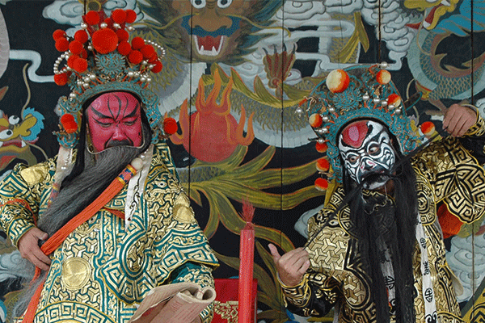
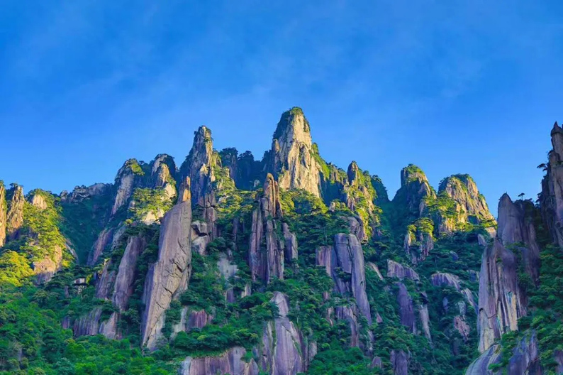

红色文化：上饶集中营
上饶集中营是抗日战争时期国民党顽固派于1941年“皖南事变”后设立的大型监狱， 主要关押被俘的新四军将士、爱国民主人士和革命群众。 集中营旧址位于上饶市信州区茅家岭街道，如今已建成全国爱国主义教育示范基地， 包含茅家岭监狱、七峰岩监狱等多个旧址展馆。在这里，革命先烈们面对敌人的残酷迫害， 始终坚守革命信仰，他们的英雄事迹激励着一代又一代青少年铭记历史、奋勇前行。

地域文化：徽剧
徽剧是上饶极具代表性的地域文化瑰宝，距今已有三百多年的历史，2006年被列入第一批国家级非物质文化遗产名录。 上饶的徽剧融合了皖南徽调与江西本土的弋阳腔、青阳腔等唱腔特点， 形成了独具特色的艺术风格，表演时唱腔高亢激昂、动作刚劲有力，伴奏乐器以徽胡、 笛子、锣鼓等为主。上饶多地至今仍保留着专业的徽剧剧团，不仅传承《水淹七军》《贵妃醉酒》等经典剧目，还结合新时代主题创排了红色题材徽剧， 让这项古老的艺术在青少年群体中也能得到传承和发扬。

旅游文化：三清山
三清山位于上饶市玉山县与德兴市交界处，因玉京、玉虚、玉华三座山峰宛如道教三清尊神列坐山巅而得名，2008年被列入《世界自然遗产名录》。 三清山以奇特的花岗岩峰林地貌和丰富的道教文化景观著称， 景区内有“东方女神”“巨蟒出山”等标志性自然景观，还有三清宫、 龙虎殿等保存完好的道教古建筑群。作为上饶最具代表性的旅游名片， 三清山不仅展现了大自然的鬼斧神工，还承载着中华传统文化中“道法自然”的核心理念，是青少年了解自然地理和传统文化的绝佳研学目的地。